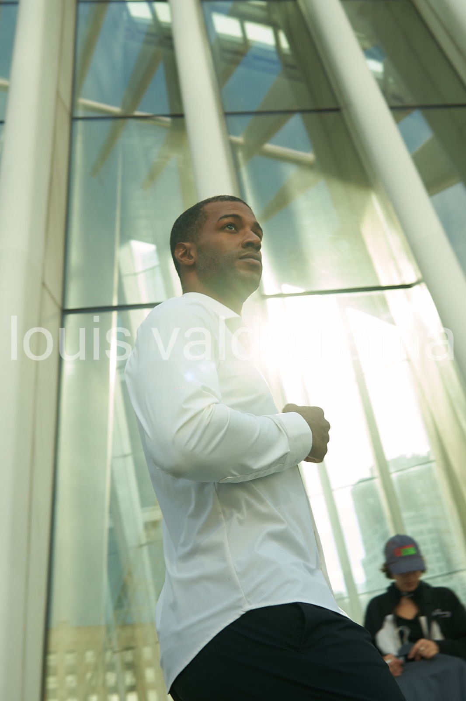
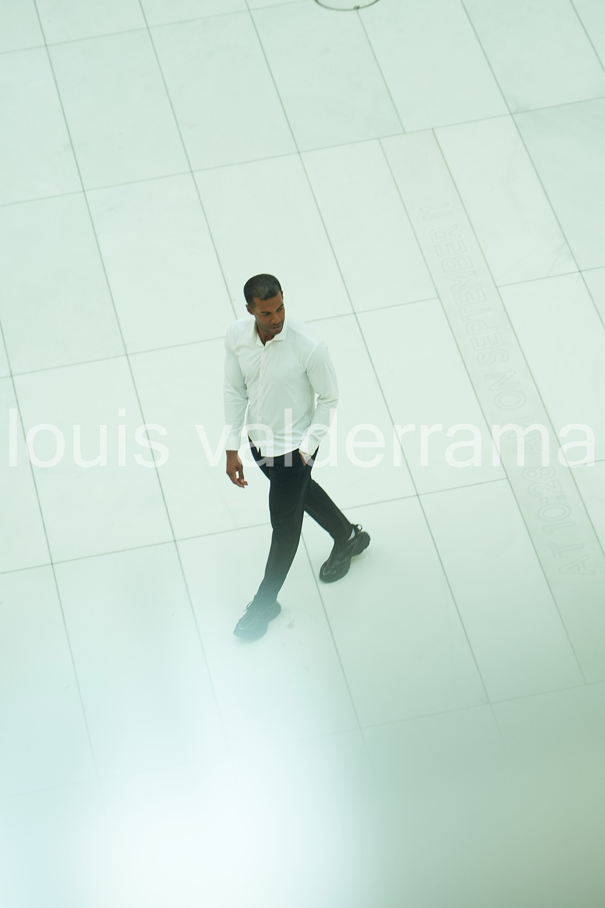
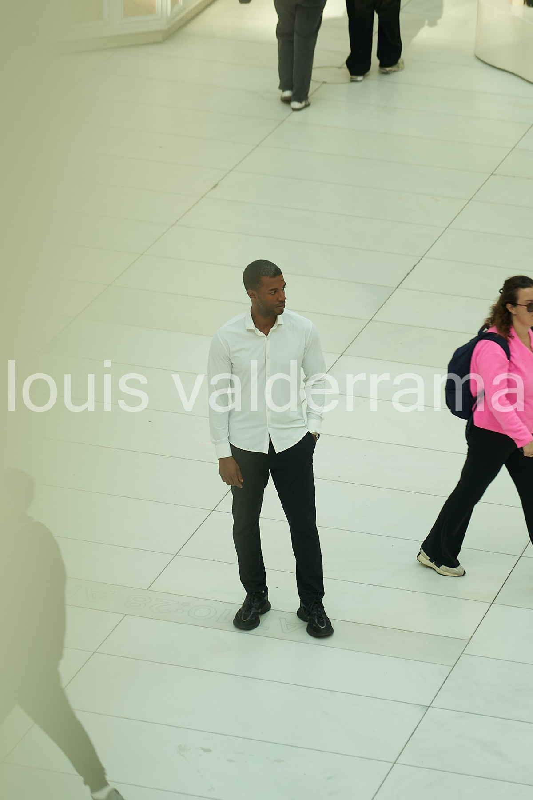

CAMISA
LIQUID FORM
VERSATILIDADFIT SLIM · MANGA LARGA
Redefine la experiencia de llevar una camisa.
TECNOLOGÍA
- SE MUEVE CONTIGO CON NATURALIDADTecnología Expand Motion 4-Way
- LIGERA Y FRESCATecnología Light Motion
- IMPECABLE POR MÁS TIEMPO, CON CONTROL DE ARRUGASTecnología Protection